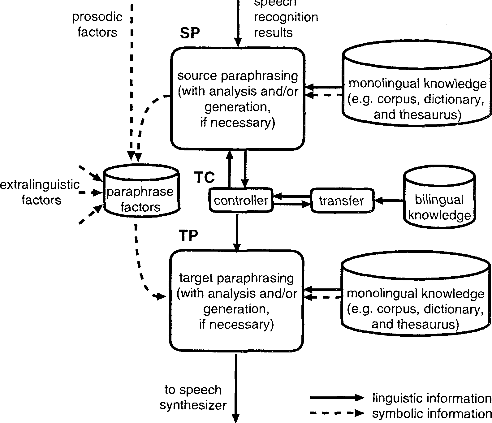
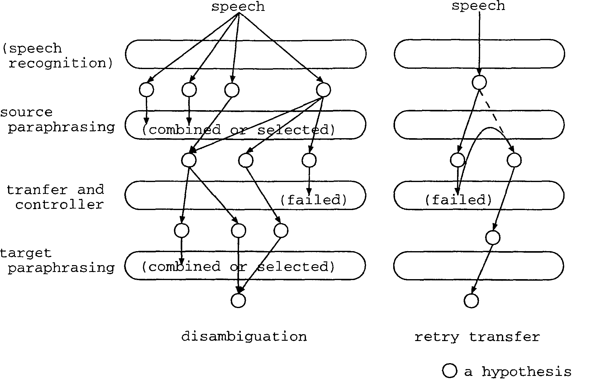

This paper proposes a new machine translation design that is the core architecture in an on-going project named SANDGLASS. The SANDGLASS system places special emphasis on monolingual processing and is designed to effectivcly deal with spoken languages. The system has good portability from modularity provided by a natural language protocol and monolingual processing reinforcement. This paper clarifies some advantages of the system by discussing several aspects in conventional translation approaches. Currently, SANDGLASS is being applied to bidirectional Chinese and Japanese spoken language translation involving travel conversation dialogs.
paraphrasing, machine translation, spoken language, Chinese, Japanese
This paper illustrates a new spoken language translation (SLT) paradigm, designed from a practical point of view. Our task here is to build an SLT system that ofrers task- and language-portability, as well as robustness against speech noise and the variety of spoken languages, within a practical development period and with practical resources. To date, there has been no SLT (including machine translation, MT) system constructed with these motivations.
Let's assume that we have to build a new SLT system between two languages (excluding English), i.e., a source and a target, such as between Chinese and Japanese. Fortunately, we can utiIize a certain amount of Japanese linguistic resources (i.e., corpora, dictionaries, thesauri) and also Chinese ones. We also have several language-processing tools available, such as morphological analyzers. What we may not have, however, are bilingual resources such as well-aligned corpora and treebanks. The situation becomes worse in an environment involving spoken language processing: at present, the bilingual corpora available for spoken languages (except one case between English and a certain language) are quite hopeless. Under these circumstances, our resolution to the task mentioned above is summarized in the following two keywords:
In addition, another aspect that is vital for SLT but can be ignored in MT is as follows.
Considering these three keywords, we propose a new translation design that is based on light transfer with source/target language paraphrasing. This strategy of translation is similar to a beginner's transIation process; if we have poor knowledge about translation into a certain language, we attempt to paraphrase a source input to a sentence that we can translate. Similarly, if we need to translate an unfamiliar language into our mother tongue, we paraphrase the result of a literal transfer for more naturalness. These observations imply that both source paraphrasing and target paraphrasing can resolve most translation problems, even if we do not have sufficient bilingual knowledge.
Under this policy, we have been developing a new SLT system called SANDGLASS. The purpose of this paper is to propose and discuss the overall design of the SANDGLASS system. First, the system is discussed by comparisons with other conventional translation approaches. Then, other advantageous characteristics of the system are explained and discussed.
In the SANDGLASS project, the current objective is spoken language translation between Chinese and Japanese, through travel conversation dialogs. In this paper, we concentrate our discussion on the overall design of the SLT model. Accordingly, the details of the paraphrasing (see section 2) are out of the scope of this paper. A discussion on the source paraphrasing module in SANDGLASS is reported in Zhang and Yamamoto (2001).
Figure 1 illustrates the overall design of SANDGLASS. SANDGLASS can basically be classifIed as a transfer-based SLT system. However, its process flow is not as simple as the typical analysis-transfer-generation process flow.
|
 |
First, the source paraphrasing module (SP) inputs utterances from a speech recognizer and passes paraphrased text(s) to the transfer controller (TC). Here, both the input and output of SP are texts, therefore, SP itself can have analysis and generation submodules, if necessary. Second, TC feeds the source texts to the transfer module and if target texts are successfully returned, then TC feeds them to the target paraphrasing module (TP). If a failure occurs, TC requests SP to re-paraphrase the source into a different form. TP can also be made to have analysis and generation submodules, if necessary. TP finally performs text output to the speech synthesizer.
The system also has a storage module linked with SP and TP, allowing paraphrase factors to be utilized for the TP module. At times, information concerning prosody can be obtained from the speech recognizer, and so it is important to store this information in the storage of paraphrase factors. It is also important to store extralinguistic information, such as the speaker's gender and social role, and the hearer's age, together. The purpose of maintaining such information is to utilize them, not only for the current input but also for the forthcoming inputs. It is necessary for the transfer model to bypass all of these factors, because these factors are useful only in the target paraphrasing; it would otherwise make the transfer much more complicated and enormous (i.e., taken together with the text(s)).
The first task of the source paraphrasing module (SP) is to deal with noisy inputs from the speech recognizer. An input may not necessarily be a text, but a list of texts. In such a case, SP has to select or combine them. SP may output multiple paraphrased texts to TC. If TC requests that different forms be paraphrased, SP has to re-paraphrase the inputs, using information on the transferable parts of the utterances, which may be given by the transfer through TC.
The mission of the source paraphrasing in SANDGLASS is roughly classified into three kinds as follows:
In other words, the first type is a problem of SLT, the second a problem occurring only in SANDGLASS, and the last a problem broadly occurring in natural language processing.
Currently, texts are paraphrased by simple pattern-matching rules, which are manually built by analyzing collected Chinese utterances. At present, we do not require Chinese segmentation and part-of-speech tagging modules, because segmentation and labeling are performed by our speech recognizer (Zhang et al. (2000)). The discussion of the Chinese SP module in SANDGLASS is reported in Zhang and Yamamoto (2001).
The transfer process is a mapping process between the source language and the target language. Dealing with monolingual phenomena is sufficiently formidable, and we therefore insist on the uncontrollable nature of handling the different varieties of two different languages together without reducing each variation. Furthermore, spoken languages are believed to have more variety than written languages. That is, in SLT, there are a lot of ungrammatical (but acceptable for human) expressions inputted into the speech translator. Therefore, we propose an MT/SLT mechanism where the transfer engine itself can be light and simple.
Under this principle of light-and-simple transfer, our transfer module does not have the following two obligations, unlike the conventional transfer:
The former obligation indicates that the transfer module is allowed to fail in transferring inputs into the target language, and in such cases, SP is obliged to generate input expressions that can be transferred to the target language by paraphrasing. The latter obligation indicates that the transfer module is not expected to narrow hypotheses. It can, however, increase hypotheses by the transferring process. We claim that these obligations, which the typical MT model imposes upon the transfer module, increase the already large amounts of bilingual knowledge and bilingual processing. It is therefore inappropriate to impose them in the case of non-English SLT systems.
Consequently, we expect the transfer to only list up possible hypotheses against the source input. The transfer module will not be responsible for the functions of spoken language variation reduction and disambiguation. As a resuIt, bilingual knowledge can more easily be constructed or collected, because it is sufficient for near raw and unprocessed data to be employed. With bilingual knowledge, we have to concentrate our efforts on increasing the amount.
Although the ideal transfer is always preferable, it is not required, both the source paraphrasing and target paraphrasing are responsible for disambiguating hypotheses. The task of TC is to output the transferred texts to TP if the transfer succeeds, or to request another paraphrasing of the source language to SP with a hint if the transfer fails. A hint is a transferable input part. In our framework, any transfer approach is possible, e.g., a rule-based approach, pattern-based approach, statistics-based approach, or translation memory. Currently, we are using a simple pattern-based transfer approach.
The task of the target paraphrasing is to convert a transfered sentence into a more natural and appropriate one using what we call paraphrase factors, which are given by SP, the speech recognizer, and factors outside of the system.
There are some similarities between the target paraphrasing in SANDGLASS and the generation module in the conventional model. In contrast, the differences of the two can be enumerated as follows:
In most of the modules of SANDGLASS, the input and output communicate with a natural language. This improves the modularity. From the viewpoint of system management, SANDGLASS has the following advantages by modularity.
First, it keeps the independence between every two modules with natural language protocols, this enables parallel development and independent evaluation. The approaches of the individual modules are independent of each other, and moreover, the part-of-speech system within the system is also independent because it has its own analysis module in SP/TP; transfer does not necessarily meet the requirements of this module.
Second, the modularization improves the portability to alternative tasks. There is no relationship between the transfer knowledge and the other two paraphrasers, and therefore, the knowledge can easily be replaced for other tasks, or the parallel collection of the transfer knowledge (such as translation pair collection) is a possibility.
The modularization also improves the portability of languages, similar to interlingua-based translation. When a language L is added to interIingua translation, it is necessary to build an L-interlingua conversion module and an interlingua-L conversion module. In SANDGLASS, similariy, building SP and TP (of a language L) gives a new language pair. Of course, SANDGLASS requires several kinds of bilingual knowledge, but we also understand that it requires relatively less efrort to collect raw level bilingual knowledge, such as translation pairs, rather than re-defining interIingua to adopt a new language.
Finally, we are convinced that both paraphrasers can contribute towards other natural language tasks such as document summarization. As described above, the paraphrasers have natural language protocols at their inputs and outputs, and therefore, they really can be "black boxes," i.e., general modules.
The necessity of automatic pre-editing (such as Shirai et al. (1993), Yoshimi and Sata (1999)) and post-editing (such as Yamamoto (1999)) for MT/SLT seems to be well understood nowadays and they seem to be involved in many MT systems in several ways.
The essential difference between pre-/post-editing and paraphrasing in SANDGLASS is in the relative importance in the overall MT system. In the conventional transfer-based system, the transfer module dominates the system and the pre-/post-editing module is a support module of the transfer process. For example, the purpose of postediting in Yamamoto's work (Yamamoto (1999)) is to correct the transfer resuIt, based on the collection of erroneous transfer resuIts. In all cases, both pre-editing and post-editing are regarded as supporters of the transfer module, as the prefixes ,pre- and post- seem to illustrate.
In contrast, both the source paraphrasing and target paraphrasing in SANDGLASS are the two main processes of the system. Accordingly, the transfer module does not have the initiative in aIl cases. This design enables us to reduce the burden of the transfer module, which is a core barrier in MT/SLT development.
One advantage by shifting the burden reduction elnerges in the construction of knowledge. Building bilingtlal knowledge requires an expert having the skills to speak both the source language and target language. However, it is impractical to expect a lot of such experts in the case of minor language pairs. In contrast, there is hope in constructing monolingual knowledge by collecting native speakers of both languages.
The essential problems in MT can be summarized to only one word: disambiguation. Considering the typical transfer model, i.e., a three-process model consisting of analysis, transfer, and generation, each module has to resolve some of the ambiguities and pass the results to the following process.
In SANDGLASS, a translation is carried out by the cooperative work of both paraphrasing processes. The transfer module is considered as a tool, or a function, of SP that attempts to paraphrase each input into a sentence able to be transferred correctly in some sense. Figure 2 shows a basic idea in terms of disambiguation in SANDGLASS. There are two important principles in the idea; the possibility of an increase in the number of hypotheses as the processes continue, and the irresponsibility of the disambiguation within the transfer. First, SP has to disambiguate speech recognition resuIts possibly the outputs of multiple hypotheses. In the transfer process, an attempt is made to transfer each hypothesis to the target language, but some of the hypotheses are rejected due to the poor bilingual knowledge of the transfer. If the transfer outputs multiple hypotheses, TP has to combine or select the hypotheses into one.
Figure 2 also illustrates an idea: re-generating hypotheses by re-paraphrasing. As the transfer is not responsible to produce an output, no hypothesis might remain after a transfer takes place. In such cases, TC asks SP to re-paraphrase the input into another form. Here, TC may give SP information on the transferable parts of the input, if possible, in order to ease the paraphrasing in SP. Moreover, although it is not implemented at present, knowledge in a source language dictionary and thesaurus can be utilized to replace words that are not in the bilingual dictionary, with their most similar expressions in a monoIingual dictionary or thesaurus.
|
 |
In the JANUS-II system (Waibel (1996)), the number of hypotheses decreases as the processes continue. Disambiguation is conducted mainly in the semantic parser (lattice-to-interIingua transfer) and contextual disambiguator (of interlingua). We adopt the same policy in the sense that multiple hypotheses are allowed until the final process. The differences between JANUS-II and SANDGLASS with respect to the process of disambiguation are as follows:
Let us consider word sense disambiguation here. Most typically, word sense disambiguation is regarded as a transfer problem. Most systems resolve this ambiguity by selecting words/phrases of the target language. However, this requires knowledge tightly linking the source language knowledge and target language knowledge.
In contrast, we propose a basic principle here that, in SLT, the word sense should be resolved by both the source language paraphrasing and target language paraphrasing. We claim that it is critical to resoIve word ambiguities all at once: this problem can be separated to a source language problem and a target language problem. If a word within the source language has more than one meaning, it should be solved by source paraphrasing. If a word in the target language has more than one corresponding word, word selection should be done in the target paraphrasing.
Our mechanism indicates that there are two independent word sense disambiguation engines, each of which has its own different language resources. Even if a word sense cannot be narrowed down in the source language paraphrasing, there is a possibility everything can be resolved in the target paraphrasing. Consequently, our model is believed to generally be more robnst than one-chance resolver models in terms of word sense disambiguation.
SANDGLASS also has an another trial function not characteristic of any MT/SLT system so far: bypassing paraphrase factors for natural outputs in the target paraphrasing. This is achieved because SANDGLASS has contrastive paraphrasing processes before and after its light transfer.
Zong et al. (2000) proposed paraphrasing an input utterance into a standard expression with certain criteria. We have a similar architecture in terms of changing an input expression into a different one beore the transfer process. However, our architecture largely difrers in the purpose of the paraphrasing: as discussed in subsection 2.1, one of the purposes of the source paraphrasing is the separation of paraphrase factors out of the source input, not just the simpliflcation of the input. The basic policy in Zong et al. (2000) is to reduce insignificant information, while that of SANDGLASS is to preserve factors not necessary in the transfer process in the separate storage. We may extract, by the source paraphrasing process, something concerning the effect of the paraphrasing or the difrerence between before and after the paraphrasing. We believe that such information can be very useful as keys for the paraphrasing in the target paraphrasing process.
As a typical example, Yamada et al. (2000) proposed a method to incorporate information on dialog participants into transfer rules and dictionary entries. In contrast, we insist in this paper that such information should go around the transfer module in MT. The reason for bypassing the transfer module is to leave information such as the speaker's gender itself unchanged according to the language; it is not necessary to take the information into the transfer process. Of course, the information can be useful for a more natural translation; however, we believe it is sufficient to utilize such paraphrase factors after the transfer process.
Let us consider an example. If a speaker of an utterance has a certain emotion, such as anger or sadness, this emotion may be implied somewhere in the expression. In this case, if the source pafaphraser can detect it and separate it into a normal (i.e., non-emotional) expression and a symbol [angry] or [sad], the information should be bypassed to the target paraphraser. If the speech recognizer can be made to detect such information in the future, we might also be able to store the information and merge it with other paraphrase factors.
For this purpose, we have prepared several kinds of paraphrase factors into the memory of SANDGLASS. In the current prototype, the following types of factors are assumed to be stored:
We illustrated and discussed the overall design and principles of SANDGLASS, our new SLT system. To summarize this project report, we proposed the following three important paradigms implemented in SANDGLASS:
At the current initial stage, the transfer module of SANDGLASS now targets approximately 60000 utterances in translation from Chinese to Japanese, which are chosen from hotel reservation and other travel conversations in the ATR Spoken Language Corpus1. The current prototype is now running on Linux, and it is programmed mainly in the Perl language.
We have also started collecting paraphrase corpora of Japanese (Shirai and Yamamoto (2001)) and Chinese separately, in order to acquire paraphrasing knowledge automatically. For the Japanese corpus, Japanese native speakers have paraphrased approximately 29000 sentences. We have observed from the collection of paraphrased sentences that, on average, a sentence is paraphrased to 0.34 different sentences, excluding paraphrased sentences by simple phrase reordering. For the Chinese corpus, Chinese native speakers have paraphrased 20000 thousands utterances of travel conversations.
We are now developing the source paraphrasing module for Chinese (Zhang and Yamamoto (2001)), and the target paraphrasing modules for Japanese, independently. The technologies applied for both paraphrasing modules will be reported soon. System evaluations will also be announced later.